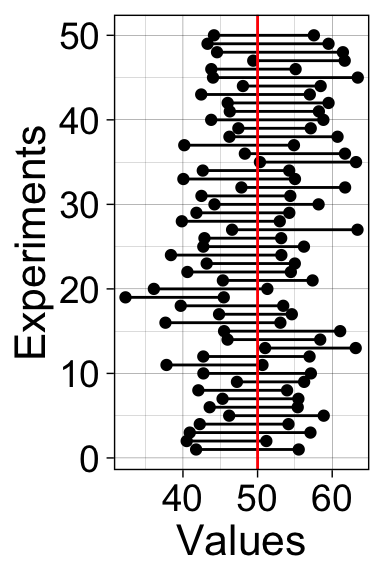

library(tibble)
library(ggplot2)When I mention code from Rand Wilcox, it is available in a giant text file. You access the functions by using the source() function:
source("./code/Rallfun-v35.txt")For convenience, most of the functions necessary for this course are available in the smaller file Rallfun-v35-simplified.txt. In this version, I’ve removed the option SEED=TRUE, which allows users to set the random seed inside the function, which means you get the same results every time you use the function. With SEED=FALSE, different random bootstrap samples are returned each time the function is called. It is better practice to set the seed in your R notebook, for reproducibility and transparency. So be careful to use SEED=FALSE when using functions from Rallfun-v35.txt.
source("./code/Rallfun-v35-simplified.txt")In some of the notebooks, I’ve extracted one or a few functions so you can source a smaller file. This prevents your environment from being cluttered with functions you don’t need. Creating a well documented R package is a lot of work, so some statisticians don’t spend the time required. But that means their code is less accessible.
See more detail and updated versions of the code here.
Some of the functions are also available in the WRS2 package.
Enter the data in R or a text file: 5 rows (trials) and 10 columns (participants).
# enter data in matrix with 5 rows, 10 columns:
# dice_res[,1] <- c(,,,,)
# dice_res[,2] <- c(,,,,)
# dice_res[,3] <- c(,,,,)
# dice_res[,4] <- c(,,,,)
# dice_res[,5] <- c(,,,,)
# dice_res[,6] <- c(,,,,)
# dice_res[,7] <- c(,,,,)
# dice_res[,8] <- c(,,,,)
# dice_res[,9] <- c(,,,,)
# dice_res[,10] <- c(,,,,)
# Save in a txt file:
# write.table(dice_res, file = "./data/dice_res_blue.txt", row.names=FALSE, col.names=FALSE)
# write.table(dice_res, file = "./data/dice_res_green.txt", row.names=FALSE, col.names=FALSE)
# write.table(dice_res, file = "./data/dice_res_red.txt", row.names=FALSE, col.names=FALSE)nt <- 5
np <- 10
res_red <- matrix(scan("./data/res1.txt"), nrow=nt, byrow=TRUE)
res_green <- matrix(scan("./data/res2.txt"), nrow=nt, byrow=TRUE)
res_blue <- matrix(scan("./data/res3.txt"), nrow=nt, byrow=TRUE)res_red <- matrix(scan("./data/dice_res_red.txt"), nrow=nt, byrow=TRUE)
res_green <- matrix(scan("./data/dice_res_green.txt"), nrow=nt, byrow=TRUE)
res_blue <- matrix(scan("./data/dice_res_blue.txt"), nrow=nt, byrow=TRUE)Mean results
m.red <- round(apply(res_red, 2, mean), digits=1)
m.green <- round(apply(res_green, 2, mean), digits=1)
m.blue <- round(apply(res_blue, 2, mean), digits=1)Illustrate results
set.seed(1)
df <- tibble(obs = c(m.red, m.green, m.blue),
gp = factor(c(rep("Red",np),rep("Green",np),rep("Blue",np)))
)
# preserve factor order
df$gp <- as.character(df$gp)
df$gp <- factor(df$gp, levels=unique(df$gp))
ggplot(df, aes(gp, obs)) + theme_linedraw() +
geom_point(aes(colour = gp), position = position_jitter(width = 0.1)) +
scale_color_manual(values=c("red", "green4", "blue")) +
theme(legend.position = "none",
axis.text = element_text(size = 14),
axis.title = element_text(size = 16)) +
labs(x = "Groups", y = "Observations") +
coord_cartesian(ylim = c(0, 12)) +
scale_y_continuous(breaks = seq(0, 12, 2)) +
geom_errorbar(stat = "summary", fun.y = mean, fun.ymin = mean,
fun.ymax = mean, colour = "grey", width = .55, size = 3) +
geom_errorbar(stat = "summary", fun.y = mean, fun.ymin = mean,
fun.ymax = mean, colour = "black", width = .5, size = 1)What would you do next with the data?
We perform many experiments, and for each experiment we compute a confidence interval, which we plot as horizontal lines.
nboot <- 1000
alpha <- .1
lo <- nboot*(alpha/2)
hi <- nboot - lo
lo <- lo + 1
nexp <- 50 # number of experiments
n <- 20 # sample size in each experiment
n.m <- 50 # mean of normal distribution
n.sd <- 20 # sd of normal distribution
ci <- matrix(NA, nrow = nexp, ncol = 2)
ci.ttest <- matrix(NA, nrow = nexp, ncol = 2)
for(E in 1:nexp){
# sample data + bootstrap + compute mean of each bootstrap sample
samp <- rnorm(n, n.m, n.sd)
boot.samp <- apply(matrix(sample(samp, n*nboot, replace = TRUE), nrow = nboot), 1, mean)
sort.boot.samp <- sort(boot.samp) # sort bootstrap estimates
ci[E,1] <- sort.boot.samp[lo]
ci[E,2] <- sort.boot.samp[hi]
ci.ttest[E,] <- t.test(samp, conf.level = 1-alpha)$conf.int
}df <- tibble(x = as.vector(ci),
y = rep(1:nexp,2),
gr = factor(rep(1:nexp,2))
)
ggplot(df, aes(x = x, y = y)) + theme_linedraw() +
geom_point() +
geom_line(aes(group = gr)) +
geom_vline(xintercept = n.m, colour = "red") +
labs(x = "Values", y = "Experiments") +
theme(axis.title = element_text(size = 16),
axis.text = element_text(size = 14))
# https://stackoverflow.com/questions/12253239/vertical-lines-between-points-with-ggplot2
# ggsave(filename = './50expt_bootci.pdf')df <- tibble(x = as.vector(ci.ttest),
y = rep(1:nexp,2),
gr = factor(rep(1:nexp,2))
)
ggplot(df, aes(x = x, y = y)) + theme_linedraw() +
geom_point() +
geom_line(aes(group = gr)) +
geom_vline(xintercept = n.m, colour = "red") +
labs(x = "Values", y = "Experiments") +
theme(axis.title = element_text(size = 16),
axis.text = element_text(size = 14))# ggsave(filename = './50expt_ttci.pdf')
Guillaume A. Rousselet, 2019, University of Glasgow.